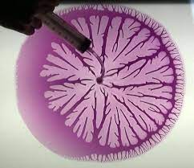

Investigating the viscoelastic properties of red blood cells using the optical forceps system
Red blood cells are among the most important components of blood, and their mechanical properties play a crucial role in various diseases. The investigation of these properties has garnered significant interest from scientists in recent years. Red blood cells generally consist of three main components: the outer membrane, the cytoskeleton, and the cytoplasm, which contains hemoglobin. Examining the properties of each of these components separately can provide valuable insights into the mechanics of red blood cells and predict their behavior under disease conditions. Optical tweezers, devices that can trap micron-sized particles and apply pico- to nanonewton forces with high precision, have become increasingly important for examining red blood cell components and measuring various parameters. This method is particularly useful for assessing viscoelastic properties. In this thesis, we intend to measure the relaxation behavior of red blood cells at different frequencies by applying periodic (harmonic) deformation. This approach allows us to evaluate the frequency dependence of both the modulus of elasticity and the loss factor in healthy blood cells. These two parameters can serve as differentiation markers for diagnosing blood diseases that involve red blood cells.
Using Electro-rotation Technique for Characterizing the Properties of Polystyrene Beads, RBCs, and Liquid Substances
We employ the two-electrode technique to induce cell rotation, as it offers a simpler approach and necessitates only a single AC signal generator. The key advantage of our setup lies in the utilization of QPD (Quadrant PhotoDetector) for detection, enabling real-time and highly accurate data acquisition regarding the rotation. This results in a more precise characterization of microbeads, RBCs, and liquid substances such as water and glycerin. Furthermore, we are actively engaged in a theoretical analysis of the rotation concerning the induced dipole moments of neighboring cells.
Designing Experiments for Soft Matter Physics Educational Laboratory
1. Finding Surface Tension and Viscosity using Capillary Action Dynamics
This lab course experiment aims to develop a user-friendly and practical setup for measuring the surface tension of fluids using capillary action. We will further explore the possibility of using this setup to assess fluid viscosity based on the observed dynamics.
2. Hydraulic Jump
This experiment aims to construct a setup for measuring observable quantities in a hydraulic jump. We will design the setup to explore various boundary conditions and flow rates (fluxes).
3. Hele-Shaw Cell
We are designing an experiment about Soffman-Taylor instability for soft matter lab. We intend to investigate Hele-Shaw cells and the behavior of different fluids under the same circumstances. We are devising a configuration that injects a less viscose liquid (like water) into a more viscose one,such as glycerin, at a steady speed, to witness the finger-like patterns that occur during this instability.

4. Magnetic Sphere
We can measure the viscosity of a material by using a setup with two Helmholtz coils. These coils generate a highly uniform magnetic field in the center. When a small magnetic sphere is placed in this region and subjected to an external force, the drag it experiences due to the fluid is related to the material's viscosity.